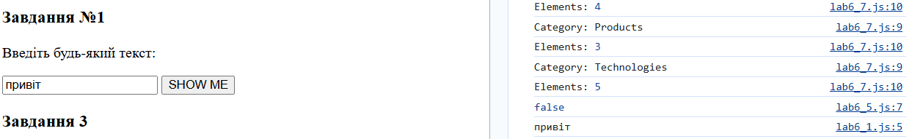
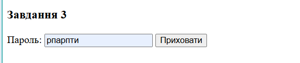
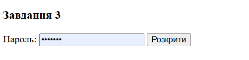
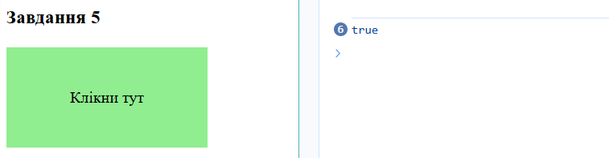
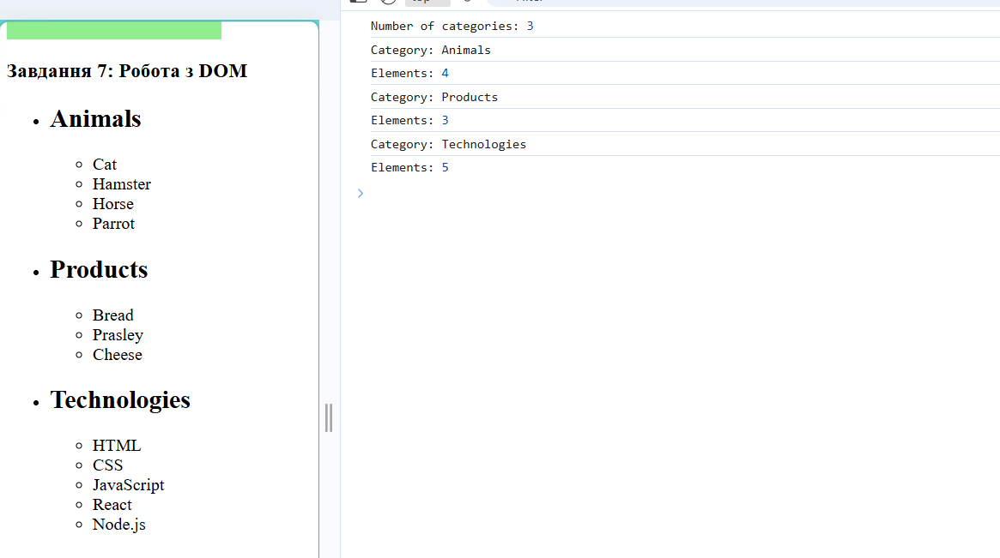
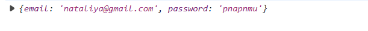
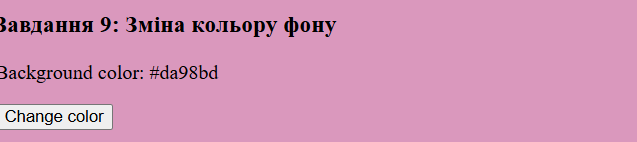
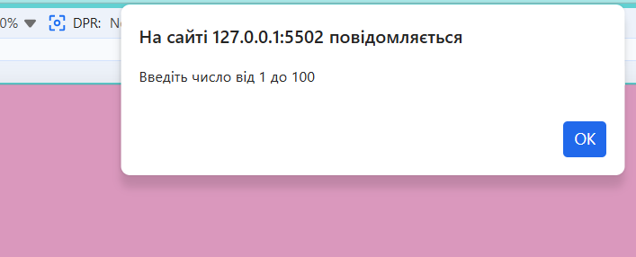
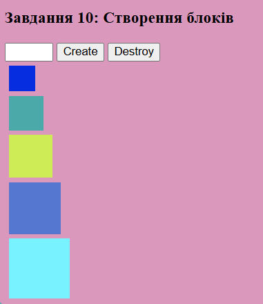

ЗВІТИ З ЛАБОРАТОРНИХ РОБІТ З
ДИСЦИПЛІНИ “Проєктування WEB-застосувань”
Виконавець: Студентка групи ІП-зп51 Масик Н.В.

Лабораторна робота №6
ЗАВДАННЯ №1
Формулювання: У звітному HTML-документі створити
html‑розмітку, яка складається з наступних елементів: текст, кнопка,
поле введення.
Натискання на кнопку SHOW ME має виводити значення з
поля введення у консолі.
У звітному HTML-документі відобразити скрін програмного коду.
Введіть будь-який текст:
<script>
const task1Input = document.getElementById("task1Input");
const showBtn = document.getElementById("showBtn");
showBtn.addEventListener("click", () => {
console.log(task1Input.value);
});
</script>
Результати:

- Посилання на репозиторій: GitHub Repository
- Посилання на сайт: Live Demo
ЗАВДАННЯ №2
Формулювання: У звітному HTML-документі створити
html‑розмітку, яка складається з наступних елементів: текст, кнопка,
інпут (поле введення).
Кнопка Приховати ховає текст, виводячи зірочки замість
введеної інформації, замінює назву кнопки на Розкрити.
При повторному натисканні текст знову стає доступним і кнопка
набуває початкового вигляду.
У звітному HTML-документі відобразити скрін програмного коду.
<script>
const passwordField = document.getElementById("password");
const toggleBtn = document.getElementById("toggleBtn");
toggleBtn.addEventListener("click", () => {
if (passwordField.type === "password") {
passwordField.type = "text";
toggleBtn.textContent = "Приховати";
} else {
passwordField.type = "password";
toggleBtn.textContent = "Розкрити";
}
});
</script>
Результати:


- Посилання на репозиторій: GitHub Repository
- Посилання на сайт: Live Demo
ЗАВДАННЯ №3
Формулювання: У звітному HTML-документі створити
html‑розмітку, яка складається з наступних елементів:
– текст, з використанням селектора класу
class="taskTitle",
– div, з використанням селектора ідентифікатора
id="place".
Додайте слухач кліку на window і визначте, чи клікнув
користувач у div з id="place".
Примітка: Якщо користувач клікнув на зеленому прямокутнику
– у консолі виведе true. У протилежному випадку –
false.
У звітному HTML-документі відобразити скрін програмного коду.
Завдання 5
<script>
const placeDiv = document.getElementById("place");
window.addEventListener("click", (event) => {
if (event.target === placeDiv) {
console.log(true); // Клік у div
} else {
console.log(false); // Клік поза div
}
});
</script>
Результати:

- Посилання на репозиторій: GitHub Repository
- Посилання на сайт: Live Demo
ЗАВДАННЯ №4
Формулювання: У звітному HTML-документі створити
html‑розмітку, яка містить список категорій
ul#categories.
Напишіть скрипт, який:
1. Порахує і виведе в консоль кількість категорій у
ul#categories, тобто елементів li.item.
2. Для кожного елемента li.item у списку
ul#categories знайде і виведе в консоль текст заголовку
елемента (тег <h2>) і кількість елементів у
категорії (усіх <li>, вкладених у нього).
Для виконання цього завдання потрібно використати метод
forEach() і властивості навігації по DOM.
У звітному HTML-документі відобразити скрін програмного коду.
-
Animals
- Cat
- Hamster
- Horse
- Parrot
-
Products
- Bread
- Prasley
- Cheese
-
Technologies
- HTML
- CSS
- JavaScript
- React
- Node.js
<script>
const categoriesList = document.querySelectorAll("#categories .item");
console.log("Number of categories:", categoriesList.length);
categoriesList.forEach((item) => {
const title = item.querySelector("h2").textContent;
const elementsCount = item.querySelectorAll("ul li").length;
console.log("Category:", title);
console.log("Elements:", elementsCount);
});
</script>
Результати:

-
Посилання на репозиторій:
- Посилання на репозиторій: GitHub Repository
- Посилання на сайт: Live Demo
ЗАВДАННЯ №5
ЗАВДАННЯ №5
Формулювання: У звітному HTML-документі створити
html‑розмітку форми логіна.
1. Обробка відправлення форми form.login-form повинна
відбуватися за подією submit.
2. Під час відправлення форми сторінка не повинна
перезавантажуватися.
3. Якщо при сабміті у формі є незаповнені поля, виводиться
alert з попередженням
'All form fields must be filled in'. Не додавайте на
інпути атрибут required, валідація має відбуватися
саме через JS.
4. Якщо користувач заповнив усі поля і відправив форму, збираються
значення полів в об’єкт з двома властивостями, де ключ — це ім’я
інпутів, а значення — відповідні значення цих інпутів, очищені від
пробілів по краях. Для доступу до елементів форми використовується
властивість elements.
5. При сабміті форми об’єкт із введеними даними виводиться у
консоль і значення полів очищаються методом reset().
У звітному HTML-документі відобразити скрін програмного коду.
<script>
const form = document.querySelector(".login-form");
form.addEventListener("submit", (event) => {
event.preventDefault();
const { email, password } = form.elements;
const emailValue = email.value.trim();
const passwordValue = password.value.trim();
if (emailValue === "" || passwordValue === "") {
alert("All form fields must be filled in");
return;
}
const userData = {
email: emailValue,
password: passwordValue,
};
console.log(userData);
form.reset(); // очищаємо форму після сабміту
});
</script>

- Посилання на репозиторій: GitHub Repository
- Посилання на сайт: Live Demo
ЗАВДАННЯ №6
Формулювання: Напишіть скрипт, який змінює колір
фону елемента <body> через інлайн‑стиль по
кліку на кнопку button.change-color і задає це
значення кольору текстовим вмістом для span.color.
Для генерування випадкового кольору використовуйте функцію
getRandomHexColor().
Примітка: Функція
getRandomHexColor() повертає колір у hex‑форматі, в
той час як колір фону на <body> буде у форматі
rgb. Це нормально й не потребує правок.
У звітному HTML‑документі відобразити скрін програмного коду.
<script>
function getRandomHexColor() {
return `#${Math.floor(Math.random() * 16777215)
.toString(16)
.padStart(6, "0")}`;
}
const body = document.querySelector("body");
const colorSpan = document.querySelector(".color");
const changeBtn = document.querySelector(".change-color");
changeBtn.addEventListener("click", () => {
const newColor = getRandomHexColor();
body.style.backgroundColor = newColor;
colorSpan.textContent = newColor;
});
</script>
Результати:

- Посилання на репозиторій: GitHub Repository
- Посилання на сайт: Live Demo
ЗАВДАННЯ №7
Формулювання: Напишіть скрипт створення й
очищення колекції елементів з наступним функціоналом.
Є input, у який користувач вводить бажану кількість
елементів. Після натискання на кнопку Create має
рендеритися (додаватися в DOM) колекція з відповідною кількістю
елементів і очищатися значення в інпуті.
При повторному натисканні на кнопку Create поверх
старої колекції має рендеритись нова.
Після натискання на кнопку Destroy колекція елементів
має очищатися.
Для рендеру елементів на сторінці створіть функцію
createBoxes(amount), яка приймає один параметр —
число, що зберігає кількість елементів для рендеру.
1. Розміри першого div елемента мають бути 30px на
30px.
2. Кожен наступний елемент повинен бути ширшим і вищим від
попереднього на 10px.
3. Усі елементи повинні мати випадковий колір фону. Використовуйте
готову функцію getRandomHexColor().
Для очищення колекції після натискання на кнопку
Destroy створіть функцію destroyBoxes(),
яка очищає вміст div#boxes.
У звітному HTML‑документі відобразити скрін програмного коду.
<script>
function getRandomHexColor() {
return `#${Math.floor(Math.random() * 16777215)
.toString(16)
.padStart(6, "0")}`;
}
const boxesInput = document.getElementById("boxesInput");
const createBtn = document.querySelector("[data-create]");
const destroyBtn = document.querySelector("[data-destroy]");
const boxesContainer = document.getElementById("boxes");
function createBoxes(amount) {
destroyBoxes();
const boxes = [];
let size = 30;
for (let i = 0; i < amount; i++) {
const box = document.createElement("div");
box.style.width = `${size}px`;
box.style.height = `${size}px`;
box.style.backgroundColor = getRandomHexColor();
box.style.margin = "5px";
boxes.push(box);
size += 10;
}
boxesContainer.append(...boxes);
}
function destroyBoxes() {
boxesContainer.innerHTML = "";
}
createBtn.addEventListener("click", () => {
const amount = Number(boxesInput.value);
if (amount >= 1 && amount <= 100) {
createBoxes(amount);
boxesInput.value = "";
} else {
alert("Введіть число від 1 до 100");
}
});
destroyBtn.addEventListener("click", destroyBoxes);
</script>


- Посилання на репозиторій: GitHub Repository
- Посилання на сайт: Live Demo
ВИСНОВКИ
У ході виконання лабораторної роботи №4 було розглянуто та реалізовано низку практичних завдань з використанням мови програмування JavaScript. Кожне завдання мало на меті закріплення навичок роботи з базовими конструкціями та функціями:
-
Використання
prompt(),alert()таconsole.log()для взаємодії з користувачем. -
Застосування умовних операторів
if...elseтаswitch-caseдля перевірки введених даних. - Робота з функціями: створення та виклик, передача параметрів, повернення результатів.
-
Обробка рядків та перевірка їх вмісту за допомогою методів
toLowerCase()таincludes(). - Робота з масивами: створення, фільтрація, сортування, побудова нових масивів на основі умов.
- Реалізація алгоритму швидкого сортування для впорядкування даних.
- Створення двовимірних масивів та їх обробка, розділення на додатні та від’ємні числа.
- Розробка інтерактивного елемента «Підказка при введенні» для текстового поля.
Виконання завдань дозволило закріпити знання з основ програмування на JavaScript, навчитися застосовувати умовні оператори, цикли, функції та методи роботи з масивами. Окремо було розглянуто створення простих алгоритмів сортування та інтерактивних елементів інтерфейсу. Таким чином, лабораторна робота сприяла формуванню практичних навичок програмування та підготовці до більш складних завдань.